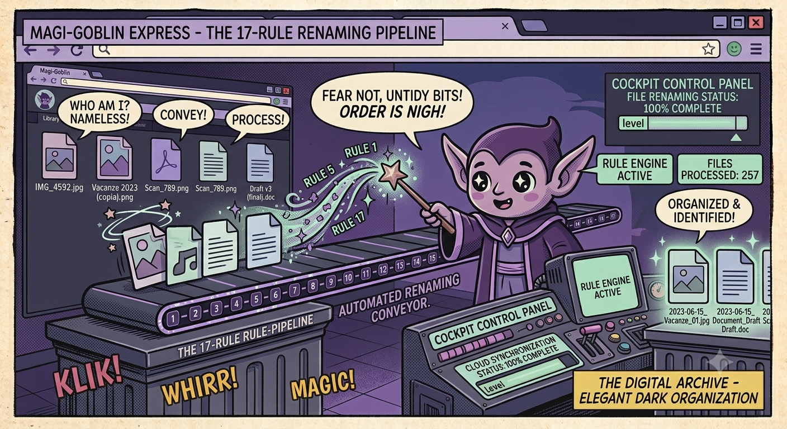

← Torna ai progettiBulk Renamer PRO
Rinomina file in batch con 17 regole componibili. Preview live con colori, undo illimitato, tema Catppuccin Mocha. Clone di ReNamer in Python + PyQt6.
✨ Cos'è
Bulk File Renamer PRO è un'applicazione GUI per il batch renaming di file. Componi uno stack di regole (fino a 17 tipi diversi) e vedi una preview live del risultato, con colori che evidenziano modifiche e conflitti. L'interfaccia è ispirata a ReNamer con un tema dark Catppuccin Mocha.
📋 Le 17 Regole
| # | Regola | Descrizione |
|---|---|---|
| 1 | 📝 Insert | Inserisci testo prima, dopo, a posizione specifica o dopo/prima di un delimitatore. Meta-tags: [[MTIME_DATE]], [[INDEX]], ecc. |
| 2 | ✂️ Delete | Elimina un range di caratteri (per posizione, delimitatore o conteggio) |
| 3 | 🗑 Remove | Rimuovi testo (tutte le occorrenze, prima/ultima), case-sensitive, whole-word. Multipli con *|* |
| 4 | 🔄 Replace | Find & replace con regex, wildcard (* e ?), case-sensitive, whole-word |
| 5 | 🔀 Rearrange | Riordina token del nome con delimitatori o posizioni esatte. Template con $1, $2... |
| 6 | 🔧 Extension | Cambia estensione file, append, rimuovi duplicati consecutivi |
| 7 | ✂️ Strip | Rimuovi caratteri specifici o set predefiniti (cifre, simboli, lettere, parentesi). Modalità invert |
| 8 | 🔠 Case | Converti: lowercase, UPPERCASE, Title Case, Invert, First capital, Sentence case |
| 9 | 🔢 Serialize | Numerazione: decimale, romana, lettere (a-z, ba-bz...), note musicali. Padding, step, reset |
| 10 | 🎲 Randomize | Stringa random come prefisso/suffisso o sostituzione nome. Lunghezza e set caratteri configurabili |
| 11 | 📏 Padding | Aggiungi/rimuovi zero-padding su numeri nei nomi file. Anche text padding |
| 12 | 🧹 Clean Up | Rimuovi parentesi, normalizza spazi, split camelCase, rimuovi emoji e segni diacritici |
| 13 | 🌍 Translit | Traslitterazione: tedesco, francese, italiano, spagnolo, portoghese, russo, greco, giapponese + mappe custom |
| 14 | 📅 Reformat Date | Rileva date nei nomi file via regex e riformattale (es. 2025-06-01 → 01062025) |
| 15 | 🔣 Regex | Sostituzione regex arbitraria. Per utenti avanzati |
| 16 | 📋 User Input | Sostituisci nomi file con una lista fornita dall'utente |
| 17 | 🗺 Mapping | Rinomina basata su mappa chiave-valore (vecchio nome → nuovo nome) |
🏷️ Meta-tags
[[MTIME_DATE]], [[MTIME_YEAR]], [[MTIME_MONTH]], [[MTIME_DAY]],
[[MTIME_TIME]], [[INDEX]] (1-based con auto padding), [[INDEX0]] (0-based).
🔄 Workflow Tipico
- Carica file — da cartella o selezione manuale
- Aggiungi regole — dal menu Rules, appaiono come card impilabili
- Configura ogni regola — ogni card ha i suoi parametri, abilita/disabilita con checkbox
- Controlla la preview — pannello destro: nome originale, nuovo nome, stato (✓ cambiato, ⚠ duplicato, — invariato)
- Seleziona file — checkbox nella colonna ☑, header per selezionare/deselezionare tutti
- Rinomina! — click su ✅ Rename (N) per applicare
💾 Presets & Undo
Salva la configurazione corrente delle regole in un file .json e ricaricala dopo.
Undo illimitato: dopo una rinomina, puoi annullare l'operazione con ↩ Undo.
Factory Reset dal menu Tools per riportare tutto ai valori predefiniti.
🧪 Testing
93 test unit + end-to-end che coprono ogni funzione dell'engine, apply_rules_stack con combinazioni, ordinamento, regole disabilitate, meta-token e regressioni di bug fix. Solo standard library — nessuna dipendenza extra per i test.